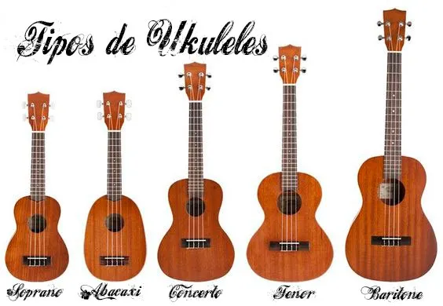
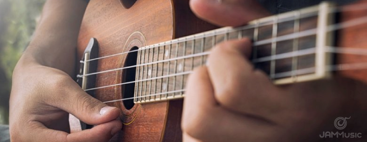

O Ukulele , vindo lá do Havaí, é tipo aquele amigão da música que conquistou todo mundo. Mesmo sendo pequenininho, as quatro cordas desse danado criam uma melodia leve e relax que faz sucesso com músicos de todos os níveis.
O legal é que aprender a tocar ukulele é de boa, é uma entrada suave pro universo musical. Ele se dá bem com vários estilos, do tropical até os sons mais modernos. E olha, a galera que curte ukulele é tipo uma família, trocando ideia e inspiração ao redor do mundo.
Mas ó, o ukulele não é só música, é também uma maneira de se expressar. Sua vibe suave é perfeita pra criar aquele clima intimista em shows ou até mesmo em eventos culturais e filmes. A galera leva esse mini-instrumento pra todo lado, espalhando alegria com seu som contagiante.
Nos últimos tempos, o ukulele tá com tudo, com músicos inovando nas técnicas, afinações e estilos. Ele tá sempre se reinventando, mostrando que é flex e se mantendo firme em qualquer parada musical. Então, o ukulele é mais que um instrumento, é tipo uma fonte de diversão e inspiração, conectando geral através da linguagem universal da música.
E não é que o ukulele, além de tudo, tá marcando presença em eventos cults, festivais e até nas trilhas sonoras dos filmes? Com essa mania de levar alegria por onde passa, ele se tornou uma estrela, mesmo sendo um mini astro da música.
O lance é que o ukulele é tão fácil de carregar que os músicos tão levando ele pra todos os lugares, botando um sorriso no rosto das pessoas. E o mais massa é que a galera tá inovando, inventando moda, explorando jeitos novos de tocar. O ukulele não para de evoluir, se adaptando a todos os gostos musicais.
Então, não é só um instrumento, é um companheiro, é aquele parceiro que tá sempre pronto pra fazer a trilha sonora da vida ficar mais animada. Com suas quatro cordas e um jeitão descolado, o ukulele continua conquistando corações e mostrando que, mesmo pequeno, tem um som gigante!
E aí, quem diria que esse "pequeno notável" ia se tornar tão essencial na cena musical, né? O ukulele veio pra ficar, espalhando sua magia musical e fazendo todo mundo se apaixonar por suas notas contagiantes. E que continue assim, embalando momentos e trazendo sorrisos por aí!
